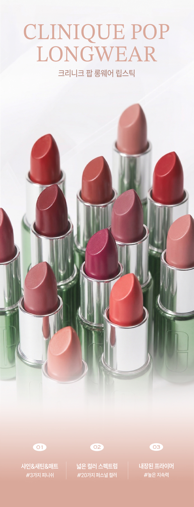
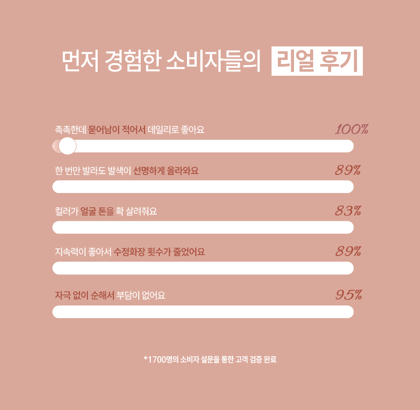
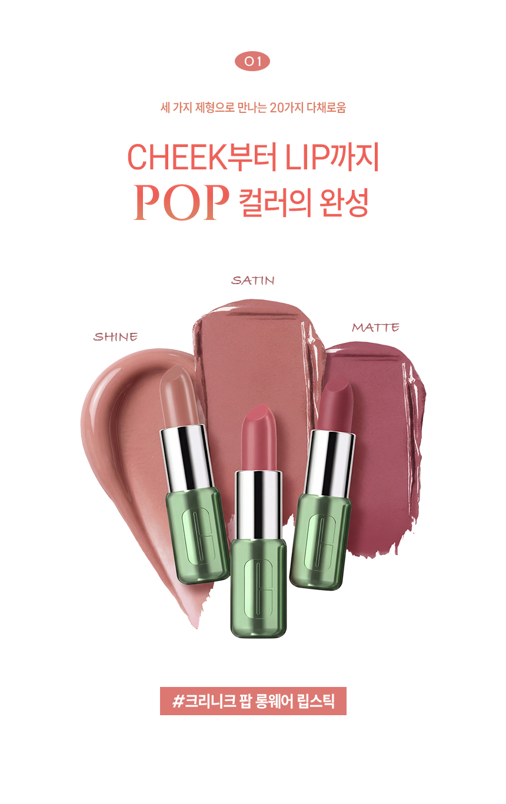
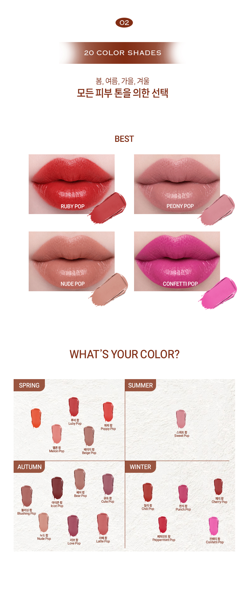
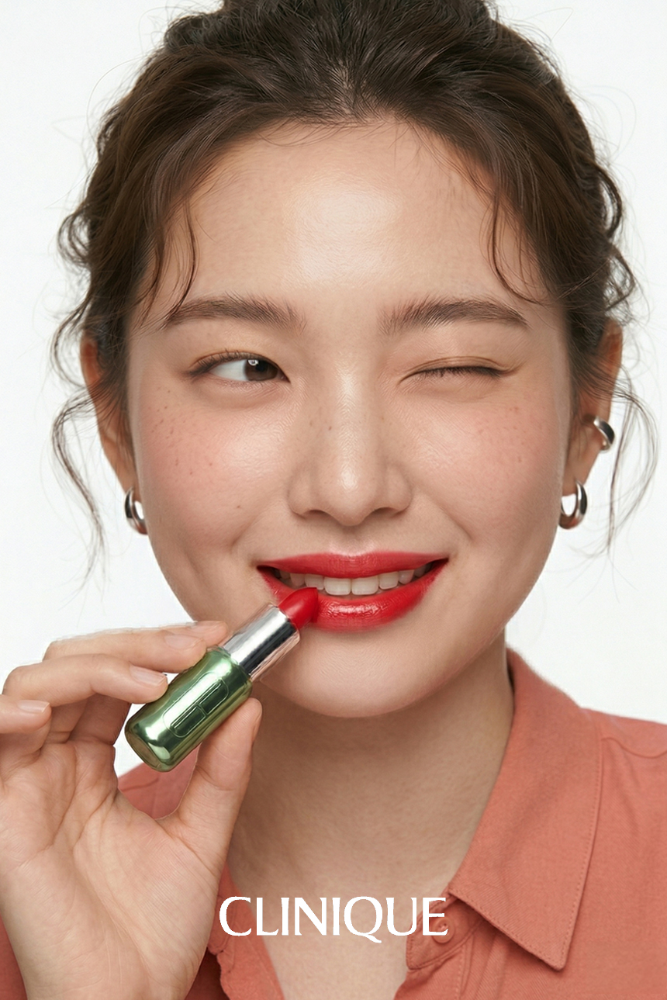

Clinique Pop Longwear Lipstick
립스틱 상세페이지
product detail
Design Point
- 1 프로젝트 개요 및 기획 의도
- 본 상세페이지는 퍼스널 컬러에 민감하고, 건조함 없이 선명한 발색을 원하는 20–40대 여성 소비자를 타겟으로 제작되었습니다. 단순한 색조 제품 나열을 넘어, 고객 맞춤형 립 솔루션을 제안하는 데 목적을 두었습니다. 또한 20가지 컬러로 인한 선택 부담을 줄이기 위해 퍼스널 컬러 기반 가이드를 제공하여, 사용자가 보다 쉽게 컬러를 탐색하고 선택할 수 있도록 쇼핑 경험을 최적화했습니다.
- 2 움직임으로 전달하는 데이터 기반 신뢰
- 설문 데이터를 정적인 수치가 아닌 GIF 차트로 시각화하여, 사용자가 정보를 직관적으로 이해하고 신뢰할 수 있도록 설계했습니다. 단순한 데이터 나열을 넘어, 변화와 흐름이 보이는 움직임을 통해 제품의 강점을 자연스럽게 체감하게 만들었으며, 이는 사용자의 주목도를 높이고 정보 전달력을 극대화하는 요소로 작용시켰습니다.
- 3 제형 시각화와 성분 인터랙션
- 고해상도 스와치를 통해 피니쉬의 질감을 직관적으로 전달하고, 성분 그래픽을 활용해 색조를 넘어선 스킨케어링 가치를 강조했습니다.
- 4 브랜드 아이덴테티를 살린 클린 무드
- 크리니크 특유의 ‘클린 뷰티’ 이미지를 강조하기 위해 핑크 베이지 톤과 여백 중심 레이아웃을 적용하여 컬러감을 극대화했습니다. 텍스트를 최소화한 비주얼 중심 구성과 고해상도 모델 컷을 통해 시각적 쾌적함과 정보 전달 효율을 동시에 확보하고자 하였습니다.






